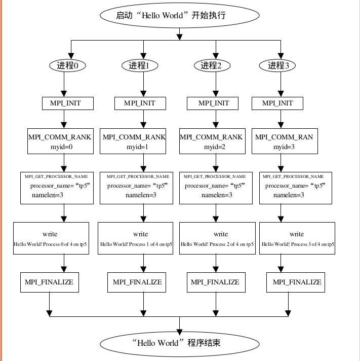

主要内容
这篇笔记对MPI并行编程和PBS任务管理系统的使用做简单的介绍，这篇笔记的书写离不开都志辉博士编写的《高性能计算之并行编程技术》以及Parallel Programming with MatlabMPI(by Dr. Jeremy Kepner), 在此向他们表示感谢！
服务器使用过程中必须的基本知识：
1. vim的基本使用；
2. 常用Linux指令及Linux文件目录管理；
书写过程中难免有错误的地方，欢迎大家fork my repo。下面是笔记的主要内容:
1. 什么是MPI？
2. First MPI programme for C or C++（Hello world！）；
3. MatlabMPI examples；
4. 使用PBS提交任务；
5. 任务查看及管理；
6. 支持。
1. 什么是MPI？
对MPI的定义是多种多样的，但不外乎下面三个方面，它们限定了MPI的内涵和外延。
----MPI是一个库，而不是一门语言。许多人认为MPI就是一种并行语言这是不准确的，但是按照并行语言的分类，可以把FORTRAN+MPI或C+MPI，看作是一种在原来串行语言基础之上扩展后得到的并行语言。MPI库可以被FORTRAN77/C/Fortran90/C++调用，从语法上说，它遵守所有对库函数/过程的调用规则，和一般的函数/过程没有什么区别。
----MPI是一种标准或规范的代表，而不特指某一个对它的具体实现。迄今为止，所有的并行计算机制造商都提供对MPI的支持，可以在网上免费得到MPI在不同并行计算机上的实现。一个正确的MPI程序，可以不加修改地在所有的并行机上运行。
----MPI是一种消息传递编程模型，并成为这种编程模型的代表和事实上的标准。MPI虽然很庞大，但是它的最终目的是服务于进程间通信这一目标的。
在MPI上很容易移植其它的并行代码，而且编程者不需要去努力掌握许多其它的全新概念，就可以学习编写MPI程序。当然，这并不意味着MPI已经十分完美，必须承认MPI自身还存在着一些缺点。
消息传递方式是广泛应用于多类并行机的一种模式,特别是那些分布存储并行机。尽管在具体的实现上有许多不同, 但通过消息完成进程通信的基本概念是容易理解的 十多年来，这种模式在重要的计算应用中已取得了实质进步，有效和可移植地实现一个消息传递系统是可行的。因此，通过定义核心库程序的语法、语义，这将在大范围计算机上可有效实现将有益于广大用户，这是MPI产生的重要原因。
2. First MPI programme for C or C++（Hello world！）
C+MPI并行程序的程序结构如下图所示，下面分几个部分对它的结构进行介绍：
#include "mpi.h"
#include
#include
void main(argc,argv)
int argc;
char *argv[];
{
int myid, numprocs;
int namelen;
char processor_name[MPI_MAX_PROCESSOR_NAME];
MPI_Init(&argc,&argv);
MPI_Comm_rank(MPI_COMM_WORLD,&myid);
MPI_Comm_size(MPI_COMM_WORLD,&numprocs);
MPI_Get_processor_name(processor_name,&namelen);
fprintf(stderr,"Hello World! Process %d of %d on %s\n",
myid, numprocs, processor_name); //打印
MPI_Finalize();
}
说明：
在上述的代码中，执行的用户程序就是打印信息。
上述代码在编译后，通过设置参数，指定其运行的节点及进程数，它将在不同的节点被执行。
由于不同节点的名称不同，所以打印出的信息也不相同。
这段程序中，每个进程执行同样的任务，在实际使用中意义不大。我们需要
相互独立的不同的任务放到不同节点去运行，以提升任务的完成速度。
这需要根据我们的实际需要，发挥我们的能力去解决，即如何将原有的程序转化成
并行执行的程序！
第一部分：首先要有MPI相对于C实现的头文件mpi.h，代码见上方所示；
第二部分：定义程序中所需要的与MPI有关的变量 MPI_MAX_PROCESSOR_NAME是MPI预定义的宏，即某一MPI的具体实现中允许机器名字的最大长度。机器名放在变量 processor_name中，整型变量myid和numprocs分别用来记录某一个并行执行进程的标识和所有参加计算的进程的个数，namelen是实际得到的机器名字的长度；
第三部分：MPI程序的开始和结束必须是MPI_Init和MPI_Finalize，分别完成MPI程序的初始化和结束工作。C程序中以 MPI_ 开头，后面的部分第一个字母大写 而其它的后续部分小写；
第四部分：MPI程序的程序体，包括各种MPI过程调用语句和C语句。MPI_Comm_rank得到当前正在运行的进程的标识号，放在myid中；MPI_Comm_size得到所有参加运算的进程的个数，放在numprocs中；MPI_Get_processor_name得到本进程运行的机器的名称，结果放在processor_name中，它是一个字符串，而该字符串的长度放namelen中；fprintf语句将本进程的标识号、并行执行的进程的个数、本进程所运行的机器的名字打印出来。和一般的C程序不同的是这些程序体中的执行语句是并行执行的，每一个进程都要执行。不妨指定本程序启动时共产生4个进程同时运行，而运行本程序的机器的机器名为tp5，4个进程都在tp5上运行，其标识分别为0 1 2 3，执行结果如下图所示。虽然这一MPI程序本身只有一条打印语句，但是由于它启动了四个进程同时执行，每个进程都执行打印操作，故而最终的执行结果有四条打印语句。
$ Hello World! Process 0 of 4 on tp5
$ Hello World! Process 1 of 4 on tp5
$ Hello World! Process 3 of 4 on tp5
$ Hello World! Process 2 of 4 on tp5
代码的编译指令如下：
$ mpicc –O2 –o hello hello.c //生成hello可执行程序可执行程序的运行指令如下，但并行程序的提交一律使用PBS脚本提交任务，下述指令仅可用于测试。详见第四部分的内容。
$ mpirun –np 4 ／home/username/hello //运行hello可执行程序
/*说明 -np 4 表示4个进程； 需使用绝对路径指定可执行程序*/
3. MatlabMPI examples
MatlabMPI是一个Matlab脚本程序包，是MPI的Matlab脚本实现，使得Matlab程序可以在并行计算机上运行。下面通过运行其程序包中的例子具体使用说明其使用方法，如有疑问也可以打开其源代码查看，具体如下：
1. 复制MatlabMPI到自己用户目录下（该文件夹已经在服务器上，路径：/home/mpiuser/MatlabMPI）；
2. 将MatlabMPI/src目录添加到Matlab路径中 (e.g. 在matlab/startup.m 文件中添加 addpath ~/MatlabMPI/src， 请根据自己的安装目录酌情修改)；
3. 输入"help MatlabMPI" 获取函数帮助；
4. 输入 "help function_name" 获取具体函数的帮助；
5. 打开"examples" 目录；
6. 打开matlab, 从命令行运行下列样例程序：
$ eval( MPI_Run('xbasic', 2,machines) );
$ eval( MPI_Run('basic', 2,machines) );
$ eval( MPI_Run('multi_basic',2,machines) );
$ eval( MPI_Run('probe', 2,machines) );
$ eval( MPI_Run('speedtest', 2,machines) );
$ eval( MPI_Run('basic_app', 2,machines) );
$ eval( MPI_Run('broadcast', 2,machines) );
$ eval( MPI_Run('blurimage', 2,machines) );
说明：
因为平台没有界面，可能一些样例程序无法执行。
这些程序只是告诉大家如何运行一个利用MatlabMPI函数库写好的脚本。
同样的，上述这些指令需要写入到PBS脚本中调用，使用qsub提交任务。
详见第四部分的内容。
MPI_Run有三个参数: MatlabMPI程序名称(不包含.m 后缀), 调用"machines"中节点的数量，节点名称列表。如果用户在MPI_Run中使用N个节点，"machines"列表中有M个节点（M > N）, MPI_Run会调用列表中前N个节点运行程序。
"machines"节点列表格式如下:
machines = {};
%Run on a local processors.
machines = {'machine1' 'machine2'}) );
%Run on multiprocessors.
machines = {'machine1:dir1' 'machine2:dir2'}) );
%Run on multiprocessors and communicate via dir1 and dir2,
%which must be visible to both machines.下面是basic脚本的源代码，功能是完成在各节点间发送和接收参数，具体说明见代码中的说明：
%%%%%%%%%%%%%%%%%%%%%%%%%%%%%%%%%%%%%%%%%%%%%%%%%%%%%%%%
% Basic Matlab MPI script that
% sends a matrix to another processor.
%
% To run, start Matlab and type:
%
% eval( MPI_Run('basic',2,{}) );
%
% Or, to run a different machine type:
%
% eval( MPI_Run('basic',2,{'machine1' 'machine2'}) );
%
% Output will be piped into two files:
%
% MatMPI/basic.0.out
% MatMPI/basic.1.out
%
%%%%%%%%%%%%%%%%%%%%%%%%%%%%%%%%%%%%%%%%%%%%%%%%%%%%%%%%
% MatlabMPI
% Dr. Jeremy Kepner
% MIT Lincoln Laboratory
% kepner@ll.mit.edu
%%%%%%%%%%%%%%%%%%%%%%%%%%%%%%%%%%%%%%%%%%%%%%%%%%%%%%%%
% Initialize MPI.
MPI_Init;
% Create communicator.
comm = MPI_COMM_WORLD;
% Modify common directory from default for better performance.
% comm = MatMPI_Comm_dir(comm,'/tmp');
% Uncomment if you want to save the messages that were sent.
% comm = MatMPI_Save_messages(comm,1);
% Get size and rank.
comm_size = MPI_Comm_size(comm);
my_rank = MPI_Comm_rank(comm);
% Print rank.
disp(['my_rank: ',num2str(my_rank)]);
% Set who is source and who is destination.
source = 1;
dest = 0;
% Create a unique tag id for this message(very important in MatlabMPI!).
tag = 1;
% Check to make sure that we have exactly two processors.
if(comm_size == 2)
% Source.
if (my_rank == source)
% Create data.
data = 1:10;
% Send it.
MPI_Send( dest, tag, comm, data, data );
end
% Destination.
if (my_rank == dest)
% Receive data.
[data data1] = MPI_Recv( source, tag, comm );
% Check data.
if(any((data - (1:10)) ~= 0))
disp('ERROR: incorrect data sent.');
exit;
end
end
end
% Finalize Matlab MPI.
MPI_Finalize;
disp('SUCCESS');
if (my_rank ~= MatMPI_Host_rank(comm))
exit;
end
%%%%%%%%%%%%%%%%%%%%%%%%%%%%%%%%%%%%%%%%%%%%%%%%%%%%%%%%
% Copyright 2002 Massachusetts Institute of Technology
%
% Permission is herby granted, without payment, to copy, modify, display
% and distribute this software and its documentation, if any, for any
% purpose, provided that the above copyright notices and the following
% three paragraphs appear in all copies of this software. Use of this
% software constitutes acceptance of these terms and conditions.
%
% IN NO EVENT SHALL MIT BE LIABLE TO ANY PARTY FOR DIRECT, INDIRECT,
% SPECIAL, INCIDENTAL, OR CONSEQUENTIAL DAMAGES ARISING OUT
% OF THE USE OF THIS SOFTWARE AND ITS DOCUMENTATION, EVEN IF MIT
% HAS BEEN ADVISED OF THE
% POSSIBILITY OF SUCH DAMAGE.
%
% MIT SPECIFICALLY DISCLAIMS ANY EXPRESS OR IMPLIED WARRANTIES INCLUDING,
% BUT NOT LIMITED TO, THE IMPLIED WARRANTIES OF MERCHANTABILITY, FITNESS
% FOR A PARTICULAR PURPOSE, AND NON-INFRINGEMENT.
%
% THIS SOFTWARE IS PROVIDED "AS IS," MIT HAS NO OBLIGATION TO PROVIDE
% MAINTENANCE, SUPPORT, UPDATE, ENHANCEMENTS, OR MODIFICATIONS.
4. 使用PBS提交任务
任务（程序或命令）：可以是用户程序（如C程序），也可以是系统命令下面是一个完整的任务脚本例子，脚本名为 mytask：
#!/bin/bash //指明所用的 shell
#PBS –N mytask //设置任务名称
#PBS -l walltime=1:00:00 //请求任务执行时间
#PBS -l select=ncpus=4:mem=400mb //请求任务执行所需资源
#PBS -e /home/username/Jobname.err //定义输出运行过程中的错误信息路径
#PBS -o /home/username/Jobname.out //定义输出信息路径
date //系统命令（打印日期时间）
##mpirun –np 4 /home/username/my_application //执行的任务 for c/c++
//(当前名为 my_application的任务)
matlab < helloworld.m //执行MATLAB程序
date // 系统命令（打印日期时间）
第1行说明所用的 shell；第2至6行是pbs指示语句，设置了任务的一些属性，并请求了资源；第7至10行是要执行的命令及任务。 编写完脚本后，使用 qsub 命令提交脚本，在 shell下输入：
$ qsub mytask
后敲回车。
系统会输出一个任务标识符：sequence-number.servername，如 220.cnode01。sequence-number是任务编号，后面需要用这个号查看任务的执行状态，servername 是 pbs server的名称。此外，在指定的输出文件路径内会有输出文件建立。任务提交后请关注任务状态，如有异常及时查阅＊.err文件。
5. 任务查看及管理
任务提交后，用户如果要知道任务的当前运行状态，可以通过 qstat 命令+任务标识符查询。
任务的状态如下：
* B 只用于任务向量，表示任务向量已经开始执行
* E 任务在运行后退出
* H 任务被服务器或用户或者管理员阻塞
* Q 任务正在排队中，等待被调度运行
* R 任务正在运行
* S 任务被服务器挂起，由于一个更高优先级的任务需要当前任务的资源
* T 任务被转移到其它执行节点了
* U 由于服务器繁忙，任务被挂起
* W 任务在等待它所请求的执行时间的到来(qsub -a)
* X 只用于子任务，表示子任务完成
取消删除任务
qdel 93.node1
6. 支持
Having trouble with Coding or Task Management? Check out the documentation and website on the top of this note or contact with me and I’ll help you sort it out.